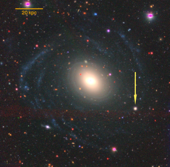
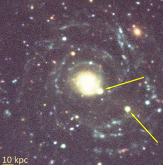

Anna Saburova, Igor Chilingarian,
Anastasia Kasparova, Kirill Grishin, Olga Sil’chenko, Ivan Katkov, Roman Uklein
11institutetext: Sternberg Astronomical Institute, M.V. Lomonosov Moscow State University, Universitetsky pr., 13, Moscow 119234, Russia,
11email: saburovaann@gmail.com
22institutetext: Institute of Astronomy, Russian Academy of Sciences, Pyatnitskaya st., 48, Moscow 119017, Russia
33institutetext: Center for Astrophysics — Harvard and Smithsonian, 60 Garden Street MS09, Cambridge, MA 02138, USA
44institutetext: New York University Abu Dhabi, PO Box 129188 Abu Dhabi, UAE
55institutetext: Center for Astro, Particle, and Planetary Physics, NYU Abu Dhabi, PO Box 129188, Abu Dhabi, UAE
66institutetext: Special Astrophysical Observatory, Russian Academy of Sciences, Nizhniy Arkhyz, Karachai-Cherkessian Republic 357147, Russia
رؤى رصدية حول سيناريوهات تكوّن المجرات العملاقة ذات السطوع السطحي المنخفض
الملخص
تمثل المجرات العملاقة ذات السطوع السطحي المنخفض (gLSBGs)، التي تصل أنصاف أقطار أقراصها إلى 130 kpc، تحدياً للنظريات المقبولة حالياً في تكوّن المجرات وتطورها، إذ يصعب بناء مثل هذه الأنظمة الكبيرة والباردة ديناميكياً عبر الاندماجات مع الحفاظ على أقراص ممتدة. نلخص الدراسة المتعمقة لعينة من 7 مجرات gLSBGs استناداً إلى نتائج الأرصاد الطيفية طويلة الشق المنجزة بتلسكوب BTA الروسي ذي القطر 6-m التابع لـ SAO RAS، وإلى القياس الضوئي السطحي وبيانات Hi المتاحة في الأدبيات. كشفت دراستنا أن معظم مجرات gLSBGs لا تنحرف عن علاقة تولي-فيشر. واكتشفنا توابع إهليلجية مدمجة (cE) في 2 من بين هذه المجرات الـ 7. وبالنظر إلى الندرة الإحصائية لكل من gLSBGs وcEs، فإن الاصطفاف المصادف غير محتمل، مما قد يشير إلى أن gLSBGs وcE مرتبطة تطورياً ويقدم دليلاً مؤيداً لسيناريو التكوّن عبر اندماج رئيسي. كما تُناقش مسارات تكوّن أخرى لمجرات gLSBGs.
keywords:
تطور المجرات، المجرات ذات السطوع السطحي المنخفضمقدمة.
تستحق المجرات العملاقة ذات السطوع السطحي المنخفض (GLSBGs) اهتماماً خاصاً لأنها تضم أكبر الأقراص الدوارة في الكون. فلهذه المجرات كتل باريونية تبلغ وكتل ديناميكية  . وتواجه سيناريوهات تكوّن المجرات المقبولة حالياً صعوبة في تفسير خصائصها، لأن تجميع الكتلة على هذا النطاق يتطلب عادةً عشرات الاندماجات الصغرى والكبرى، وهي عمليات يرجح أن تدمر القرص، وتلغي الزخم الزاوي الكلي، وتحول المجرة إلى مجرة إهليلجية عملاقة. ولم يُعثَر إلا على بضع عشرات من مجرات gLSBGs منذ اكتشاف المجرة النموذجية Malin 1 في عقد 80 على يد Bothun1987، ولذلك تُعد نادرة للغاية. ولا يزال سؤال تكوّن gLSBGs مفتوحاً (Kasparova2014; Galaz2015; Hagen2016; Boissier2016; Saburova2018; Saburova2021) على الرغم من أهميتها بوصفها “اختبار إجهاد” لنموذج
. وتواجه سيناريوهات تكوّن المجرات المقبولة حالياً صعوبة في تفسير خصائصها، لأن تجميع الكتلة على هذا النطاق يتطلب عادةً عشرات الاندماجات الصغرى والكبرى، وهي عمليات يرجح أن تدمر القرص، وتلغي الزخم الزاوي الكلي، وتحول المجرة إلى مجرة إهليلجية عملاقة. ولم يُعثَر إلا على بضع عشرات من مجرات gLSBGs منذ اكتشاف المجرة النموذجية Malin 1 في عقد 80 على يد Bothun1987، ولذلك تُعد نادرة للغاية. ولا يزال سؤال تكوّن gLSBGs مفتوحاً (Kasparova2014; Galaz2015; Hagen2016; Boissier2016; Saburova2018; Saburova2021) على الرغم من أهميتها بوصفها “اختبار إجهاد” لنموذج  CDM الكوني. ويمكن لاندماج رئيسي واقع في مستوى واحد بين مجرتين حلزونيتين عملاقتين، مع معاملات مدارية مضبوطة بدقة، أن ينتهي إلى نظام يشبه gLSBG (Saburova2018). وينطبق ذلك أيضاً على اندماج ثلاثي رئيسي يضم مجرتين غنيتين بالغاز، حين يحفز إمداد الغاز البارد من الأنظمة الساقطة تبريد غاز الهالة الساخنة للمجرة المضيفة، ثم يتكوّن لاحقاً قرص عملاق ممتد (Zhuetal2018). ويبين تحليل نتائج محاكيات EAGLE أن أكثر أقراص LSB امتداداً تتشكل بفعل الاندماجات (Kulieretal2020). كما يمكن لتراكم الغاز البارد من خيط كوني أو من توابع غنية بالغاز (Penarrubia2006) على مجرة موجودة سلفاً ذات سطوع سطحي عالٍ (Saburova2019) أن يعزز نشوء قرص عملاق. كذلك يمكن أن تؤدي هالة المادة المظلمة منخفضة الكثافة على نحو غير مألوف إلى تكوّن قرص LSB عملاق (Kasparova2014).
في هذه الورقة نلخص باختصار الجهود التي بذلناها لفهم سيناريو تكوّن gLSBGs من خلال رصد عينة من 7 مجرات gLSBGs: Malin 1، Malin 2، NGC 7589، UGC 1378، UGC 1382، UGC 1922، وUGC 6614.
CDM الكوني. ويمكن لاندماج رئيسي واقع في مستوى واحد بين مجرتين حلزونيتين عملاقتين، مع معاملات مدارية مضبوطة بدقة، أن ينتهي إلى نظام يشبه gLSBG (Saburova2018). وينطبق ذلك أيضاً على اندماج ثلاثي رئيسي يضم مجرتين غنيتين بالغاز، حين يحفز إمداد الغاز البارد من الأنظمة الساقطة تبريد غاز الهالة الساخنة للمجرة المضيفة، ثم يتكوّن لاحقاً قرص عملاق ممتد (Zhuetal2018). ويبين تحليل نتائج محاكيات EAGLE أن أكثر أقراص LSB امتداداً تتشكل بفعل الاندماجات (Kulieretal2020). كما يمكن لتراكم الغاز البارد من خيط كوني أو من توابع غنية بالغاز (Penarrubia2006) على مجرة موجودة سلفاً ذات سطوع سطحي عالٍ (Saburova2019) أن يعزز نشوء قرص عملاق. كذلك يمكن أن تؤدي هالة المادة المظلمة منخفضة الكثافة على نحو غير مألوف إلى تكوّن قرص LSB عملاق (Kasparova2014).
في هذه الورقة نلخص باختصار الجهود التي بذلناها لفهم سيناريو تكوّن gLSBGs من خلال رصد عينة من 7 مجرات gLSBGs: Malin 1، Malin 2، NGC 7589، UGC 1378، UGC 1382، UGC 1922، وUGC 6614.
نتائج الأرصاد الطيفية طويلة الشق.
أجرينا أرصاداً طيفية طويلة الشق بتلسكوب BTA ذي القطر 6-m التابع لـ SAO RAS باستخدام مطيافي SCORPIO وSCORPIO-2 (AfanasievMoiseev2005; AfanasievMoiseev2011). ويمكن العثور على تفاصيل اختزال البيانات وتحليلها في Saburova2018; Saburova2019; Saburova2021. وأبرز نتائج هذه الأرصاد هو اكتشاف مكونات منفصلة حركياً في UGC 1922 وUGC 1382. ففي UGC 1382، يدور القرص الغازي العام بعكس اتجاه دوران النجوم، ويشير ذلك إلى أصل خارجي للغاز في القرص الممتد. كما أن التجمعات النجمية في الأجزاء المركزية من 5 من أصل 7 من مجرات gLSBGs قديمة وغنية بالمعادن، مما يدعم سيناريو تراكم الغاز على مجرة ذات سطوع سطحي عالٍ موجودة سلفاً.


 و
و ، والمأخوذة من Junais2019. تشير الأسهم إلى مواقع توابع cE
، والمأخوذة من Junais2019. تشير الأسهم إلى مواقع توابع cEاكتشاف توابع cE.
أتاح لنا فحص صور HST الأرشيفية للمجرة النموذجية من هذه الفئة، Malin 1، اتخاذ خطوة مهمة نحو فهم طبيعة gLSBGs. فقد تبين أن Malin 1 تمتلك تابعين يشبهان المجرات الإهليلجية المدمجة الكثيفة منخفضة الكتلة (cE) (انظر الشكل 1). وتُعد cEs أنظمة منخفضة الكتلة نادرة ( % من جماعة المجرات القزمة)، ذات أحجام صغيرة ( kpc) وكثافات عالية، وتحتضن عادةً نجوماً قديمة غنية بالمعادن Chilingarianetal2009; 2021arXiv210309241F. ويرجح أنها تنشأ من التجريد المدي 2001ApJ...552L.105B لأسلاف قرصية ضخمة تفقد 90–95% من كتلتها النجمية Chilingarianetal2009; 2009MNRAS.397.1816P; 2014MNRAS.443.1151N; ChilingarianZolotukhin2015; 2021arXiv210309241F. وقد أكد التحليل البنيوي لبيانات Hubble WFPC2 باستخدام GALFIT تصنيفها على أنها cE، كما أكد إعادة تحليل الأطياف البصرية المنشورة من التلسكوب الروسي ذي القطر 6-m أن هذه المجرات cE كانت بالفعل توابع لـ Malin 1. وكشف فحص بصري لاحق لصورة بصرية عالية الجودة لـ UGC 1382 من مسح Subaru Hyper-SuprimeCam الاستراتيجي عن تابع cE إضافي لمجرة gLSBG، وأكدت بيانات SDSS الطيفية الارتباط الفيزيائي. وفي الخطوة التالية وسعنا عينتنا من gLSBGs بدرجة كبيرة من خلال الفحص البصري لبيانات HSC وDECaLS (Saburova et al.، قيد الإعداد)، واكتشفنا مزيداً من أنظمة cE+gLSBGs (Chilingarian et al.، قيد الإعداد). وبالنظر إلى التواترات الإحصائية لـ gLSBGs وcEs، فإن احتمال الاصطفاف المصادف ضعيف، ومن ثم لا بد أن cE وgLSBGs مرتبطة تطورياً، مما يقدم حججاً إضافية لصالح سيناريو الاندماج، على الأقل بالنسبة إلى بعض مجرات gLSBGs.
% من جماعة المجرات القزمة)، ذات أحجام صغيرة ( kpc) وكثافات عالية، وتحتضن عادةً نجوماً قديمة غنية بالمعادن Chilingarianetal2009; 2021arXiv210309241F. ويرجح أنها تنشأ من التجريد المدي 2001ApJ...552L.105B لأسلاف قرصية ضخمة تفقد 90–95% من كتلتها النجمية Chilingarianetal2009; 2009MNRAS.397.1816P; 2014MNRAS.443.1151N; ChilingarianZolotukhin2015; 2021arXiv210309241F. وقد أكد التحليل البنيوي لبيانات Hubble WFPC2 باستخدام GALFIT تصنيفها على أنها cE، كما أكد إعادة تحليل الأطياف البصرية المنشورة من التلسكوب الروسي ذي القطر 6-m أن هذه المجرات cE كانت بالفعل توابع لـ Malin 1. وكشف فحص بصري لاحق لصورة بصرية عالية الجودة لـ UGC 1382 من مسح Subaru Hyper-SuprimeCam الاستراتيجي عن تابع cE إضافي لمجرة gLSBG، وأكدت بيانات SDSS الطيفية الارتباط الفيزيائي. وفي الخطوة التالية وسعنا عينتنا من gLSBGs بدرجة كبيرة من خلال الفحص البصري لبيانات HSC وDECaLS (Saburova et al.، قيد الإعداد)، واكتشفنا مزيداً من أنظمة cE+gLSBGs (Chilingarian et al.، قيد الإعداد). وبالنظر إلى التواترات الإحصائية لـ gLSBGs وcEs، فإن احتمال الاصطفاف المصادف ضعيف، ومن ثم لا بد أن cE وgLSBGs مرتبطة تطورياً، مما يقدم حججاً إضافية لصالح سيناريو الاندماج، على الأقل بالنسبة إلى بعض مجرات gLSBGs.
العلاقة الباريونية لتولي-فيشر
(BTFR Sprayberry1995; McGaughSchombert2015) بين كتلة الغاز+النجوم وسرعة دوران المجرات أداة مفيدة لتشخيص مسارات تكوّن المجرات. وجدنا أن 6 من أصل 7 من مجرات gLSBGs تقع على الامتداد عالي الكتلة لعلاقة BTFR، كما هي الحال أيضاً في أكثر المجرات الحلزونية لمعاناً (DiTeodoro2021). ويشير ذلك إلى أن gLSBGs تمثل نسخاً مكبرة من أقراص أقل كتلة.
معلمات هالات المادة المظلمة
لمجرات gLSBGs، التي تمكنا من اشتقاقها من منحنيات الدوران Hi + البصرية، تُظهر ثنائية. فبعض مجرات gLSBGs تمتلك مقاييس نصف قطرية كبيرة لمقطع كثافة الهالة المظلمة، بينما لا تمتلك مجرات أخرى ذلك. ومن ثم فإن فئة gLSBG ليست متجانسة في الواقع، وقد توجد قنوات تكوّن مختلفة. وفي الوقت نفسه، ووفقاً لنتائجنا (Saburova2021)، فإن لمعظم مجرات gLSBGs أصلاً خارجياً للمادة التي تكوّن أقراصها الممتدة (سيناريوهات الاندماج والتراكم).
الشكر والتقدير: أُنجزت نمذجة كتلة منحنيات الدوران بدعم من منحة مؤسسة العلوم الروسية (RScF) رقم 19-72-20089.